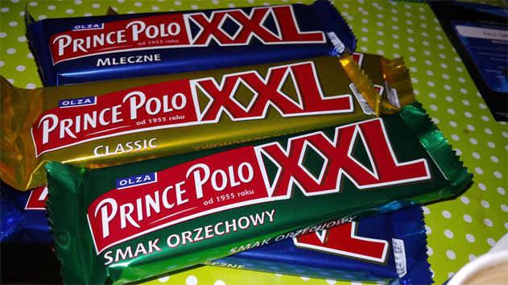

Prince Polo – polski wafel czekoladowy. Sprzedawany w Czechach, na Słowacji, na Węgrzech, na Litwie, na Łotwie, na Malcie, na Ukrainie pod nazwą Siesta i w Islandii, gdzie znany jest jako Prins Póló, i przez wiele lat sprzedawany był jako jeden z nielicznych wafli czekoladowych oraz zyskał dużą popularność wśród ludności tego kraju. Gdy 11 marca 1999 roku przybył do Polski prezydent Islandii Ólafur Ragnar Grímsson, przyznał że „Całe pokolenie Islandczyków wyrosło na dwóch rzeczach – amerykańskiej coca-coli i polskim Prince Polo
Prince Polo został wprowadzony w 1955 r. przez Olza SA w Cieszynie. Jest to pokryty czekoladą wafel składający się z czterech warstw wafla połączonych czekoladowym wypełnieniem. Firma, która została założona w 1920 r., została kupiona w 1993 r. przez Kraft Jacobs Suchard, od 2013 pod nazwą Mondelēz International. W 1995 r. na opakowaniu Prince Polo pojawiło się nowe logo, jednocześnie zmieniono opakowania oraz wprowadzono nowe smaki, poczynając od orzechowego, wprowadzonego w 1996 r., a następnie jabłkowego, mlecznego, kokosowego, piernikowego i Premium. Dodano również wafel w rozmiarze XXL (50 g).
cukier, mąka pszenna, olej palmowy, serwatka w proszku (z mleka), tłuszcz kakaowy, odtłuszczone mleko w proszku, miazga kakaowa, tłuszcz mleczny, kakao w proszku o obniżonej zawartości tłuszczu (1,4%), skrobia ziemniaczana, olej rzepakowy, emulgatory (lecytyna sojowa, E 476), pasta z orzechów laskowych, substancje spulchniające (węglany sodu, węglany amonu), aromaty, sól